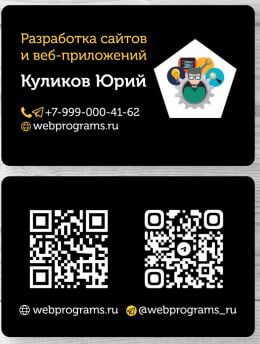

Здравствуй, мир!
Так, вероятно, должен называться первый пост на канале, посвящённом моему пути в веб-разработке и накопленному опыту. Мне пятьдесят, и три года назад я принял решение стать разработчиком. Не потому, что это модно — хотя, возможно, и это сыграло свою роль, — но главным образом потому, что моя жизнь всегда так или иначе соприкасалась с этой сферой.
В юности, выбирая профессию, я остановился на радиоинженерии. Тогда, в 16–17 лет, программисты представлялись мне людьми, которые записывали код на кассеты, проигрывали их через магнитофон и загружали простенькие программы или игры на компьютеры.
Лишь позже, учась в вузе, я понял, что программирование — это нечто большее, чем мои юношеские представления. Тем не менее, я стал радиоинженером. Паяльник, осциллограф, тестер, микросхемы, светомузыка — всё это увлекало меня ещё с седьмого класса, когда я собрал свой первый детекторный приёмник. Журналы «Юный техник» и «Радио» питали мою страсть к технике, что в итоге привело к профессии радиоинженера — востребованной в одни времена и менее актуальной в другие.
Жизнь свела меня с базами данных — сначала с Access, затем с SQL. Эти навыки пришлось осваивать по необходимости, и, возможно, я ещё расскажу эту непростую, но, как мне кажется, довольно типичную историю. Позже я стал специалистом в управлении проектами и понял, что мой опыт может быть полезен не только работодателям, но и другим людям. Тогда я не думал о предпринимательстве, а просто хотел ярко представить себя на рынке труда. Так появился мой первый сайт — на платформе, кажется, «Народ.ру». Пришлось разбираться с HTML, а затем и с задачами на стыке баз данных и веб-разработки: выгрузка данных из Access в VBScript, размещение файлов на хостинге. Я впервые столкнулся с понятием хостинга, разместил свой сайт, а позже работал с SQL Server, MySQL и WordPress, создавая личный блог и даже интернет-магазины.
Со временем я осознал, что движки и готовые решения — это удобно, но для настоящей свободы в разработке нужно глубже понимать процессы. Мне всегда чего-то не хватало: интерактивности, гибкости. Я видел, как технические специалисты с лёгкостью решали задачи, которые меня ставили в тупик, и это впечатляло. Но для углублённого изучения требовалось время.
И вот, когда ипотеки были выплачены, дети выучены, а потребности семьи удовлетворены, я наконец получил эту возможность. В 2023 году я записался на интенсивные курсы по JavaScript — первые за долгие годы. Закончив их в начале 2024-го, я почувствовал, что передо мной открылся целый мир. Не только фронтенд, но и бэкенд, со всеми их нюансами и инструментами. Это океан знаний, которого, кажется, хватит на всю жизнь, если не угаснет интерес.
Теперь я веду этот канал с несколькими целями. Во-первых, чтобы получить обратную связь. Во-вторых, чтобы найти единомышленников, которым не нужно объяснять, почему веб-разработка — это увлекательно. И, возможно, даже встретить заказчиков или работодателей. Я хочу, чтобы мой опыт приносил пользу — в этом, пожалуй, и есть смысл.
Это мой первый пост. Пишите вопросы, делитесь мыслями — буду рад любому отклику. Спасибо за внимание!
